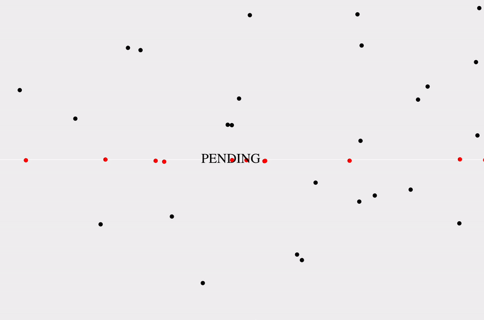
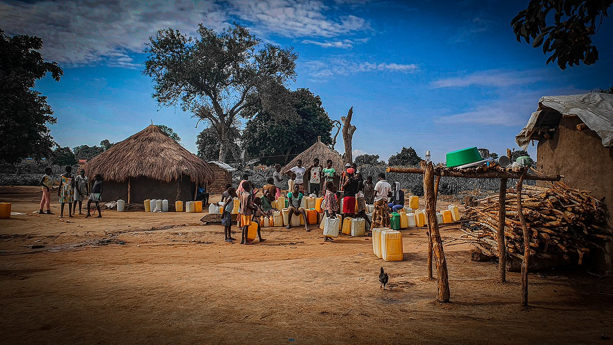
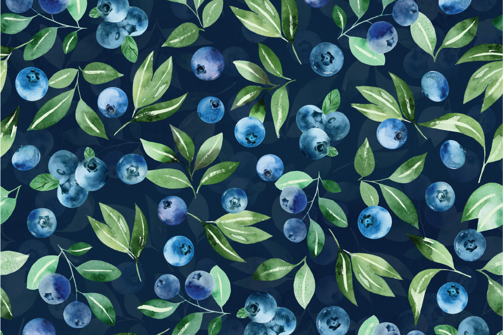
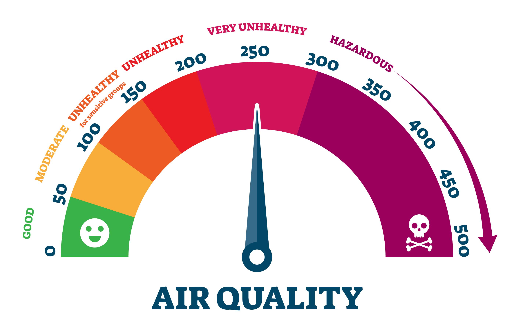
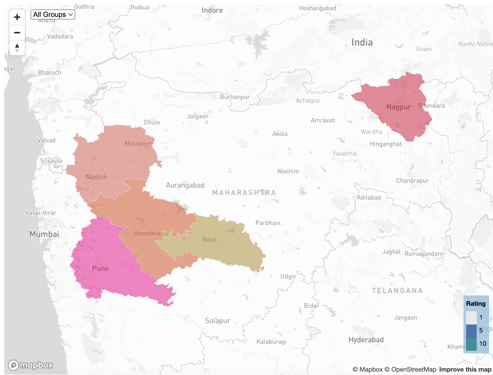
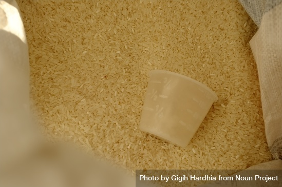

Data-Driven Narratives

Former Indian MP's Terror Trial Was Largely Conducted in Her Absence
An investigation revealing that former MP Pragya Thakur was present at only 3 of 162 court hearings during final arguments of the 2008 Malegaon blast case. Published by Bellingcat.

Justice So Delayed, It Is As Good As Denied
This story is a precursor to a custom database that answers questions about trial and pre-trial murder cases in Indian district courts.

Easing Water Labor in South Sudan, One Well at a Time
A look at drinking water crisis in rural South Sudan through a profile of an immigrant, Salva Dut, who walked between countries during the Sudan war.

Peru is Propelling World Blueberry Production Growth
Blueberry production of the world grew by 131% in a decade. Data shows that one country single-handedly set this trend in motion.

Daily AQI Update of Major Indian Regions
An auto-updating map of daily Air Quality Index (AQI) average of several major regions in India to observe dramatic fluctuations.
Acute Gender Disparity Among Higher Judiciary in India
Data analysis to show the number of women appointed as judges in the high courts and supreme court of India after the current selection process was adopted.

Infighting in South Sudan Sees Alarming Uptick
This story is an attempt to showcase that the uptick in casualties in South Sudan is caused by infighting among smaller factions.

Rotting Cases in Indian Courts
This map of five districts from Indian state of Maharashtra shows murder cases that were pending at the end of 2022.

World's Largest Rice Exporter Country Produces Less Than China
The largest producer of one of the most consumed food grains in the world - rice - is not the largest exporter of it, data reveals.